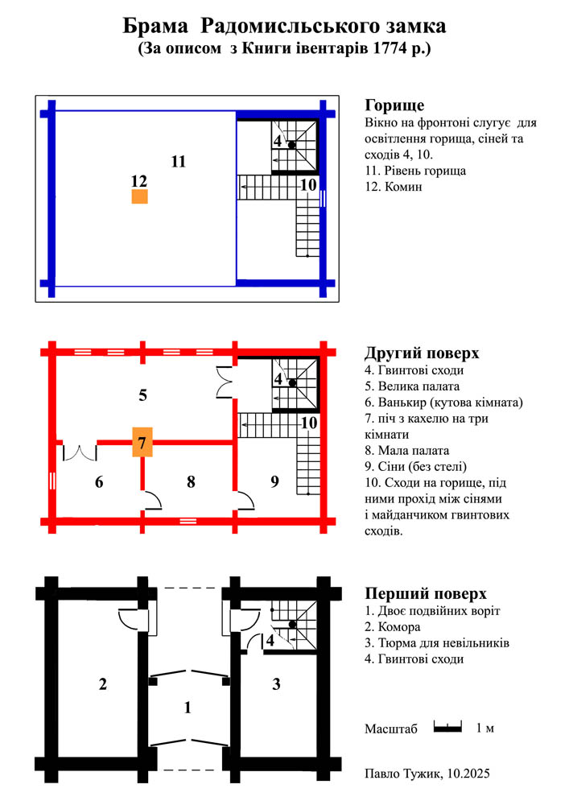
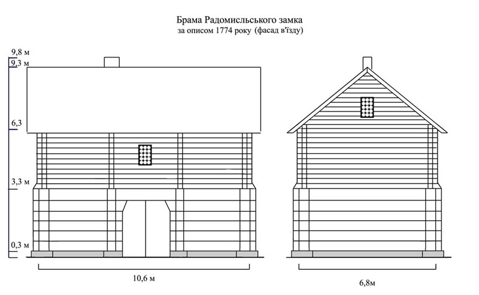
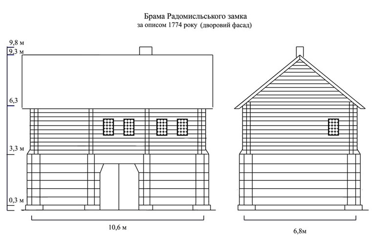
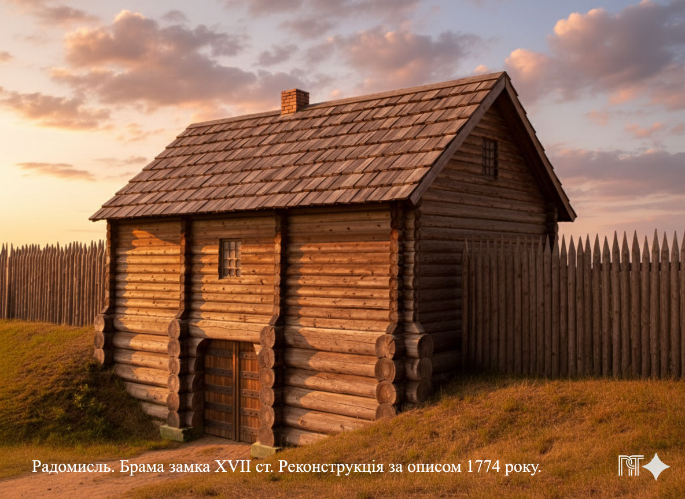
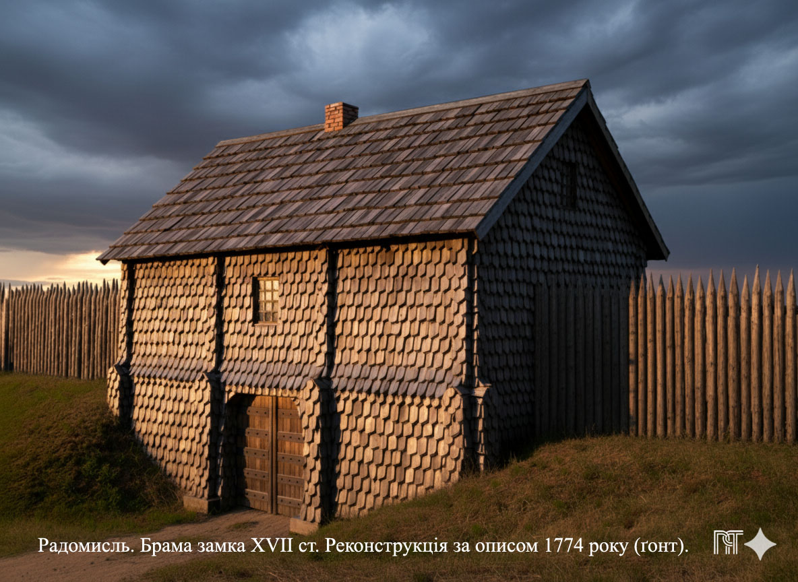

БРАМА РАДОМИСЛЬСЬКОГО ЗАМКА
Реконструкція за описом з Книги інвертарів митрополичої уніатської церкви 1774 р.
Перші письмові згадки про містечко під назвою Радомисль, у гирлі річки Мика з’являються у XVI столітті, завдяки діяльності архімандритів Києво-Печерського монастиря, які колонізували навколишні землі й оформили їх у церковну власність.
З часом Радомисль стає центром Тетерівської волості. Ймовірно, цьому сприяло його вигідне географічне розташування. Зокрема, через поселення проходив великий шлях із Києва на Захід, та й повноводна, на ті часи, річка Тетерів слугувала транспортною артерією, що пов’язувала Печерський монастир зі своїм Радомисльським маєтком.
Очевидно, справи у монастирських володіннях пішли досить непогано, і в центрі маєтку накопичувалося достатньо добра, щоб для його зберігання та захисту знадобилися великі комори та міцні стіни. Можливо, така логіка розвитку подій мала місце, бо керівництво Києво-Печерського монастиря звернулося за дозволом на будівництво замку до Стефана Баторія — короля Польського, Великого князя Литовського та Руського. Це цілком логічно, бо з 1569 року майже вся територія України, зокрема і Радомисль, була під владою новоутвореної держави Речі Посполитої.
Про дозвіл короля існує запис у реєстрах документів Коронної канцелярії:
«10 квітня 1579 рік. Вільно
Дозвіл Мелентію Хребтовичу, архімандриту Печерському, заснувати замок та місто на власній церковній печерській земельній ділянці, розташованій на Київській землі на городище, під яким городищем річка під назвою Мика в річку Тетерів гирлом впадає»1.
У 2023 році була оприлюднена і сама королівська дозвільна грамота, віднайдена істориком, професором Леонідом Тимошенком.
Як свідчать документи кінця XVII — початку XVIII століття, замок був збудований. Звичайно, це була не військова потужна фортеця, тож не слід уявляти його з десятиметровими кам’яними стінами, височенними до хмар вежами, важкими металевими ґратами на воротах та підіймальним мостом на ланцюгах.
Радомисльський замок зводився не військовими, а будувався монахами як укріплений адміністративно-господарський центр маєтку, що мав захистити людей, надбане добро від шукачів легкої поживи та невеличких загонів повстанців. Хоча, за історичними згадками, це не завжди вдавалося, і замок не раз був пограбований.
У Книзі інвентарів митрополичої єпархії уніатської церкви за 1774 рік є детальний опис замку в часи його занепаду.
За текстом відразу непросто уявити, що і як виглядає, і де знаходиться. Нижче — фрагмент з опису, що належить до другої брами: перша являла собою звичайні дубові ворота з дашком зверху.
«Далі по дорозі в замок через міст є друга велика брама на два поверхи з соснового дерева, оббита ґонтом, у котрій двоє подвійних воріт із залізними кунами, що зачиняються на дерев'яний засув. У ній на низу, тобто на першому поверсі, з лівого боку комора, до неї двері на завісах з залізними защіпкою та засувкою, а з правого боку двері на завісах, а при них усередині дверцята соснові, що засуваються дерев'яним засувом — до тюрми для невільників. Напроти вхідних дверей ідуть гвинтові сходи, вийшовши по яких на другий поверх, є велика палата, до неї двері подвійні фасовані липові старі на залізних завісах з французьким замком, нічого не вартим. У цій палаті вікон чотири, шиб круглих скла простого, оправлених у дерево, що вимагають ґрунтовної направи, два вікна з засувами зсередини з соснових дощок. З цієї палати двері до ванькиру на завісах подвійні старі, у ванькирі вікно одне простого скла зіпсоване; у тому ванькирі з лівого боку є двері до малої палати, в якій одне вікно простих шиб, оправлених у дерево, звідти двері до сіней прості з дощок соснових на завісах з клямкою і защіпкою. У великій палаті один стіл, три тапчани, два крісла, а в малій палаті столик і тапчан. Для малої і великої палат, а також для ванькира — одна піч з кахелю у квіти, знизу білого старого. У сінях сходи на горище, в ньому одне вікно, в якому шиби повибивані, там же з палат — мурований комин, що виходить на дах, потребує відновлення»2.
Якось, переглядаючи позначені на плані Радомисля 1800 року залишки валів і перечитуючи давній опис замку, мені спало на думку: а чому б за ним не спробувати зробити візуалізацію будівлі брами? Це ж цікаво, як вона виглядала!
Отже, я загорівся цією ідеєю, і через деякий час мені вдалося розтлумачити текст і перевести його в план будівлі. Зробивши з плану проєкції фасадів, я вже мав якесь уявлення про те, як могла б виглядати брама Радомисльського замку.
Це було у січні 2022 року. Сьогодні ж — жовтень 2025-го, і сучасні технології на основі ШІ надають нові можливості побудувати 3D-модель будівлі у фотореалістичному варіанті. Щоб досягти максимальної, наскільки це можливо, схожості з оригіналом, я заново почав створювати план і проєкції фасадів. Внаслідок цього повторного глибшого дослідження план змінився лише дещо за розмірами, бо в ньому вже враховано не умовну товщину стін, а можливу, як для укріпленої споруди.
Спочатку для брами я розглядав стіни-городні. Це стіни, зроблені з подвійного зрубу з пустотами між ними, які заповнювалися землею або камінням. Вони мали товщину 1,5–2 метри та витримували обстріл артилерійськими ядрами.
Враховуючи загальний характер укріплень і пам’ятаючи, що замок мав не військове, а адміністративно-господарське значення, то такі стіни-городні були б невиправдано надмірними.
Тож оптимальним рішенням для першого поверху брами був би зруб із колод товщиною 0,5 метра. Така конструкція витримала б тиск земляних валів з боків, вагу другого поверху, а також була б надійним фіксатором стовпів, на які кріпилися важкі ворота брами. Товщина стін другого поверху 0,25 м була б достатньою.
В описі брами немає жодних натяків на існування заборо́ла — бойового верхнього ярусу, який би використовувався для захисту будівлі. Я думав і про простішу конструкцію — обло́ми на горищі. Це конструкція даху з бійницями і щілинами уздовж стін, через які скидали б каміння на ворога, лили воду для гасіння підпалів. Проте, з опису брами логіка будівництва, на мій погляд, не приводить до такого рішення. До того ж, слід знову таки пам’ятати, що це не військова споруда.
Однак, треба зауважити, що над ворітьми була кімната з вікном (8), а сіни (9) ліворуч і ванькир (6) праворуч могли б мати у стінах закриті бійниці. Це давало б можливість на всю ширину брами з другого поверху вести вогонь, не допускаючи нападників до воріт.
Також слід звернути увагу на другі ворота в глибині будівлі. Вони мають сенс лише тоді, коли їх можна захистити. Це нескладно зробити, адже та ж кімната з вікном (8) знаходиться над простором між ворітьми (1). Декілька люків у міжповерховому перекритті зроблять цей простір пасткою. Якщо перші ворота будуть розбиті, то нападники на підступах до других воріт потраплять під вогонь через люки-бійниці з кімнати зверху. Із цього видно, що відсутність заборо́ла не відкриває легкого доступу до стін брами і воріт.
Тож, що я міг отримати з інвентарного опису 1774 року та логіки того часу, я виклав у плані нижче.

Одночасно зі створенням плану (горизонталь) я уточнював його фасадними проєкціями (вертикаль), бо ці площини тісно пов’язані між собою, диктуючи умови і розміри одна одній.


Я витратив чимало часу і зусиль, щоб лише наближено відтворити одну мить минулого. Звичайно, не все враховано й реалізовано, проте ця картинка допоможе уявно поринути в минуле на 400 років і побувати біля Радомисльської брами, візуалізувати її в променях сонця, що заходить.

На картинці для масштабного порівняння можна взяти товщину колоди першого поверху 0,5 м. Тоді вал від рівня проїзду матиме висоту трохи більше двох метрів, а палі огорожі сягатимуть триметрової висоти.
Не знаю, чи було так від часу будівництва, але майже через два століття після нього в описі зазначається, що брама була оббита го́нтом.
Ґонт — це невеликі дощечки, зроблені сколюванням зі стійких до гниття порід дерева. З нього робили не тільки покрівлі, а й часто ним оббивали стіни для захисту.
Звісно не так естетично, як чистий зруб, але для досягнення точності, згідно з описом, пропоную ще одну картинку брами, оббитої ґонтом. Її теж зробив у вечірню пору для насиченості кольорів.

І на завершення, залишилося визначити, де ж знаходилася брама.
Зіставивши план Радомисля 1800 року із сучасним аерознімком міста та з планом, на якому позначені горизонталі рельєфу, без сумнівів можна стверджувати, що рів, який знаходився з південно-західного боку замку, проходив по вулиці Міськради від будинку Пенсійного фонду до кочегарки школи №3 і далі.

Очевидно, що цей рів у давнину був яром, який у верхній частині трохи заглибили. Згідно з установленою локацією замку на перехресті вулиць Великої Житомирської й Міськради, через рів був міст, а відразу за ним (місце нині біля магазину "Мак-Дак") була розташована двоповерхова будівля — брама Радомишльського замку.
Післямова
Слід зазначити, що між двома документами існує протиріччя у використаних будівельних матеріалах описаних споруд.
З Книги інвентарів митрополичої єпархії уніатської церкви, 1774 р.:
«Далі по дорозі в замок через міст є друга велика брама на два поверхи з соснового дерева, оббита ґонтом (...) Ідучи із замку до фільварку, біля паркана можна побачити семінаріум порожній з соснового дерева, в костку оправленого і гебльованого».
Із рапорту Радомисльського городничого Круглова Київському військовому губернатору, 18 квітня 1803 р.:
«...брама, що при в'їзді в замок, у котрій розміщена міська поліція з городництвом і підкоморський суд, кам'яна – 1; (...) дім, названий семінарія, без печей, підлоги і стелі, двоповерховий кам'яний – 1».
Очевидно, що дерев’яні споруди, описані у 1774 році, не могли через 29 років — у 1803 — стати кам’яними. Логічно припустити, що більшої довіри заслуговує прискіпливий, детальний опис інвентарника, ніж формальний перелік городничого.
- Руська (Волинська) метрика. Регести документів Коронної канцелярії для українських земель (Волинське, Київське, Брацлавське, Чернігівське воєводства) 1569 — 1673 рр. 290 стор. До неї записувались офіційні копії вихідних документів польської Коронної канцелярії.
- Оригінал опису замку зберігається в Центральному державному історичному архіві Росії (м. Санкт-Петербург).